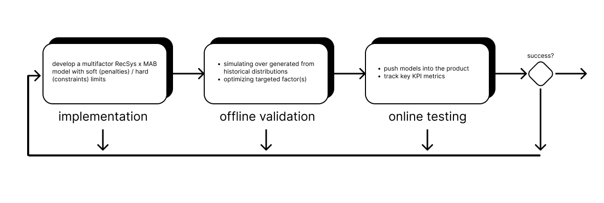

Experiments and Strategies on Fair and Transparent Recommendations
Aleksandr Popov
27.03.23
Introduction
The process of fair and transparent recommendations as a interactive sequential decision-making problem:
- exploiting user models while exploring better ways to model their preferences
- a lot of uncertainty factors: cold start, contextual changes, dynamism of preferences, etc.
- optimizing both performance metrics and fairness constraints in interpretable way
The motivation behind Fairness-aware algorithms:
- On user's side: demographic/socio-economic data biases, increase trust on platform, homogeneity
- On companies' side: suboptimal performance (e.g. activity bias), regulator obligations, social responsibility.
Fairness-aware Recommender Systems
- preprocessing (input data), algorithmic (fair modeling) and postprocessing (outputs) techniques.
- multi-objective optimisation methods to meet all stakeholder's demands
- scalable and high-level personalised outputs
Bandits in Recommender Systems
- parametrisation of user behaviour to tune exploration scenarios
- statistical modelling of uncertainty in case of bigger target metrics variation
- easy integration and validation in the product environment
Presentation Strategies
Presentation in the form of banners, pre- and mid-rolls or pop-ups can be an element of the experimental loop, as advertising attributes can be set as additional optimisation parameters (e.g. intelligent partial pooling) within existing framework.
Research Design
A case of ads recommendations in VoD services

Implementation
- EDA: identifying discrimination potential on current data
- Deriving a fairness metrics to optimize
- Pick the optimisation strategy to balance exploration and exploitation phases
Offline Validation
- Generate data based on historical distributions
- Run optimization to build surrogate model, accept parameters once target metrics is optimized
- (add.) Compare resulting algorithms with others on different cohorts of users, or build and ensemble model
Online Testing
- Integrating the model to the product
- Monitoring key KPIs to complete business constraints
Parallels with current research
Implementation of Self-Deployed Behavioural Interventions in Educational Decision-Making under Uncertainty
In this work the challenges of decision-making in the field of education are discussed. It is assumed that Integrating self-deployed behavioural interventions into the design of educational systems can improve awareness and transparency of decision-making experience. We plan to construct a framework with user experiment to model (statically and dynamically) user's behaviour and test the effectiveness of different behavioural interventions in designing learning systems.
- Decision-making problem optimization for two-sided digital platform: students and academic programs/departments
- Preference elicitation based on user's interactions and item's metadata
- Dynamic modelling of behaviour for consequent Bayesian optimisation
Thank you for your attention!
References
- Veronika Bogina;Alan Hartman;Tsvi Kuflik;Avital Shulner-Tal; (2021). Educating Software and AI Stakeholders About Algorithmic Fairness, Accountability, Transparency and Ethics . International Journal of Artificial Intelligence in Education, (), –. doi:10.1007/s40593-021-00248-0
- Geyik, Sahin Cem; Ambler, Stuart; Kenthapadi, Krishnaram (2019). Fairness-Aware Ranking in Search & Recommendation Systems with Application to LinkedIn Talent Search. Proceedings of the 25th ACM SIGKDD International Conference on Knowledge Discovery & Data Mining - KDD '19, (), 2221–2231. doi:10.1145/3292500.3330691
- McInerney, James; Lacker, Benjamin; Hansen, Samantha; Higley, Karl; Bouchard, Hugues; Gruson, Alois; Mehrotra, Rishabh (2018). [ACM Press the 12th ACM Conference - Vancouver, British Columbia, Canada (2018.10.02-2018.10.02)] Proceedings of the 12th ACM Conference on Recommender Systems - RecSys '18 - Explore, exploit, and explain. , (), 31–39. doi:10.1145/3240323.3240354
- Lin, Xiao; Chen, Hongjie; Pei, Changhua; Sun, Fei; Xiao, Xuanji; Sun, Hanxiao; Zhang, Yongfeng; Ou, Wenwu; Jiang, Peng (2019). Proceedings of the 13th ACM Conference on Recommender Systems - RecSys '19 - A pareto-efficient algorithm for multiple objective optimization in e-commerce recommendation. , (), 20–28. doi:10.1145/3298689.3346998
- Yunqi Li;Hanxiong Chen;Zuohui Fu;Yingqiang Ge;Yongfeng Zhang; (2021). User-oriented Fairness in Recommendation . Proceedings of the Web Conference 2021, (), –. doi:10.1145/3442381.3449866
- Kumar, Subodha; Tan, Yinliang (Ricky); Wei, Lai (2020). When to Play Your Advertisement? Optimal Insertion Policy of Behavioral Advertisement. Information Systems Research, (), isre.2019.0904–. doi:10.1287/isre.2019.0904
- David Sweet. 2022. Experimentation for Engineers (8th ed.). Manning Publications.
- Himan Abdollahpouri, Shaghayegh Sahebi, Mehdi Elahi, Masoud Mansoury, Babak Loni, Zahra Nazari, and Maria Dimakopoulou. 2022. MORS 2022: The Second Workshop on Multi-Objective Recommender Systems. In Proceedings of the 16th ACM Conference on Recommender Systems (RecSys '22). Association for Computing Machinery, New York, NY, USA, 658–660. https://doi.org/10.1145/3523227.3547410
- Yong Zheng and David (Xuejun) Wang. 2022. A survey of recommender systems with multi-objective optimization. Neurocomput. 474, C (Feb 2022), 141–153. https://doi.org/10.1016/j.neucom.2021.11.041
- Masoud Mansoury. 2021. Fairness-Aware Recommendation in Multi-Sided Platforms. In Proceedings of the 14th ACM International Conference on Web Search and Data Mining (WSDM '21). Association for Computing Machinery, New York, NY, USA, 1117–1118. https://doi.org/10.1145/3437963.3441672
- Masoud Mansoury, Himan Abdollahpouri, Mykola Pechenizkiy, Bamshad Mobasher, and Robin Burke. 2020. Feedback Loop and Bias Amplification in Recommender Systems. In Proceedings of the 29th ACM International Conference on Information & Knowledge Management (CIKM '20). Association for Computing Machinery, New York, NY, USA, 2145–2148. https://doi.org/10.1145/3340531.3412152